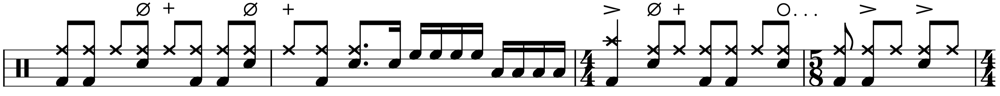
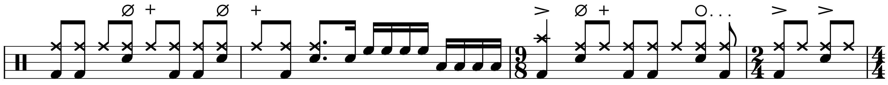

Transcription: “Aftermath” — Tom Pitts with Rolo Tomassi

Rolo Tomassi was recommended to me a few years ago, sometime after their album Time Will Die and Love Will Bury was released. The song Apple Music gave to me was “Aftermath”, and I really dig the tune. It’s got some rather ethereal verses and a very powerful ending. However, I soon discovered afterward that I had fallen victim to a bit of a bait and switch since most of the band’s catalog consists of some gnarly music with harsh vocals.
Whatever, this song’s still great. I want to use it as an opportunity to talk more about mixed meter playing since I haven’t written about it much; that is to say, songs that change time signature very often.
The verse of “Aftermath” features bars of 4/4, 3/4, 2/4, and 5/8. Very exciting! The 5/8 bars are the most interesting, and you can follow the beaming to see that the 8th notes are grouped as 1 + 2 + 2. That’s pretty unusual — 5/8 is usually felt as something like 3 + 2. I should point out that there are a few ways to count the song. Instead of 5/8, you could move the first 8th note of the bar to the measure before it. Compare these two lines:
 Which one’s correct? I’ve seen some live videos, but I haven’t got a handle on how the band counted it. I think writing it with 5/8 is the way to go; something about that phrase makes me feel like it’s all contained in one measure. But who can say?
I should point out that the keyboard cue in bar one is actually cut out from the album version of this track. Instead, it appears at the very end of the song beforehand, an ambient tune called “Towards Dawn”. All the while, you can hear it on the music video, so I left it in. That same phrase shows up a bunch of times in “Aftermath”, so I don’t know what the deal is there.
The drummer plays a slinky groove during the verse, and despite the speed of the number, the drumming doesn’t sound too overpowering. Even during the 4/4 bars, things are a bit disorienting, since most of the backbeats are on 8th note offbeats instead of 2 and 4.
I think I can hear some half–open hi–hat barks with the backbeats. I can’t really notice the drummer doing it live, but in the studio I swear can I hear something like that going on. I might just be hearing him really laying into the hi–hat during the backbeats, but I ended up notating it both ways.
The pre–chorus is driven by a tresillo rhythm and seems to alternate between two bars of 3/4 and a bar of 2/4, since the quarter notes seem to follow a 3 + 3 + 2 pattern. I could have added the measures up and just done it all in 4/4, but that didn’t feel quite right. The actual hook is definitely in 4/4 and has the drummer playing these big cymbals rolls with half notes on the kick: no backbeats. Another interesting approach.
I only did the first chunk of the song, since verse two is almost identical to the first. Meanwhile, the pre–chorus is twice as long the second time around. The finale has a very heavy half–time groove, but it’s pretty straightforward.
“Aftermath” on Songwhip.
Posted on July 18, 2021
Tags: 2021 • Transcription • Tom Pitts • Rolo Tomassi